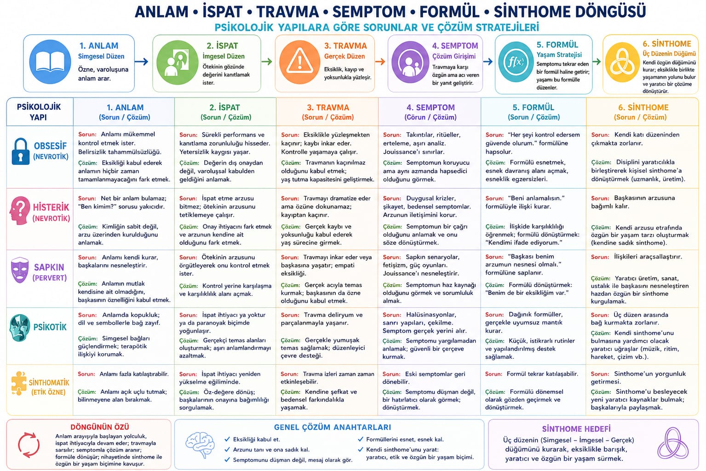

1 · 📘
📘 Anlam
Simgesel. Ben kimim?
📘🪞⚡💜🧮🪢 Anlam · İspat · Travma · Semptom · Formül · Sinthome
🗺️ Arşivdeki her çizelge aynı dizinin bir çeşitlemesidir. 🇹🇷 Türkçe sayfa orijinal tabloyu gösterir.
Simgesel. Ben kimim?
İmgesel. Sayılıyor muyum?
Gerçek. Eksik sızar.
Pahalı bir yanıt.
Tekrar eden strateji.
Yaşanabilir düğüm.

Özne dile atılır. Anlam, Öteki'nin gösteren deposundan ödünç alınır. Anlam tam olmak zorundaysa belirsizlik panik üretir. Etik hamle, bilinmeyene yer bırakmaktır.
İspat, görülme talebidir. Bakış, kıyas, performans. Yalnızca Öteki'nin damgasına bağlıysa tuzaktır.
Yalnızca bir olay değil: eksiklikle karşılaşma. Hikâyeye sığmayan. Yapılar bunu karşılama biçimleriyle ayrılır.
Zaten bir çözümdür — pahalı bir çözüm. Jouissance'ın bağlanma biçimi. Hem mesaj hem keyif kipi.
Semptom algoritma olur: kontrol edersem / sormaya devam edersem / sahneyi kurarsam. Donarsa kafes; yaşarsa mevsimlik olabilir.
Semptomun yokluğu değil. Semptomun düğüm olarak yeniden işlenmesi: İmgesel, Simgesel ve Gerçek'i tutan bir pratik.